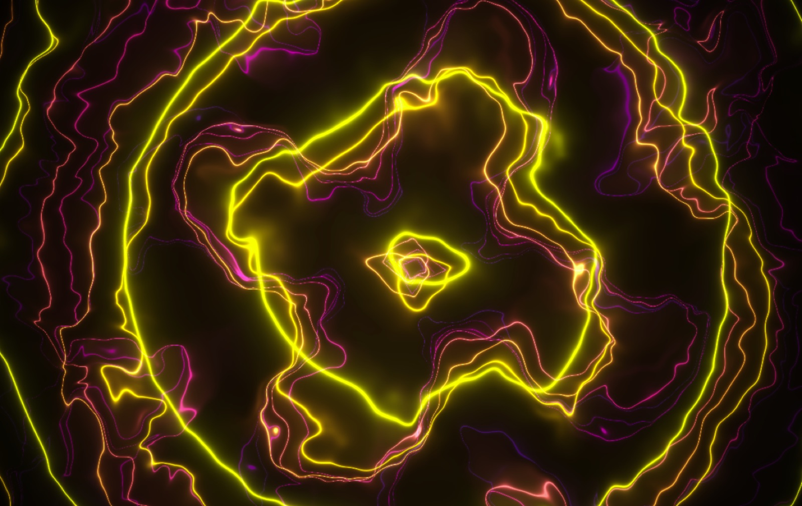
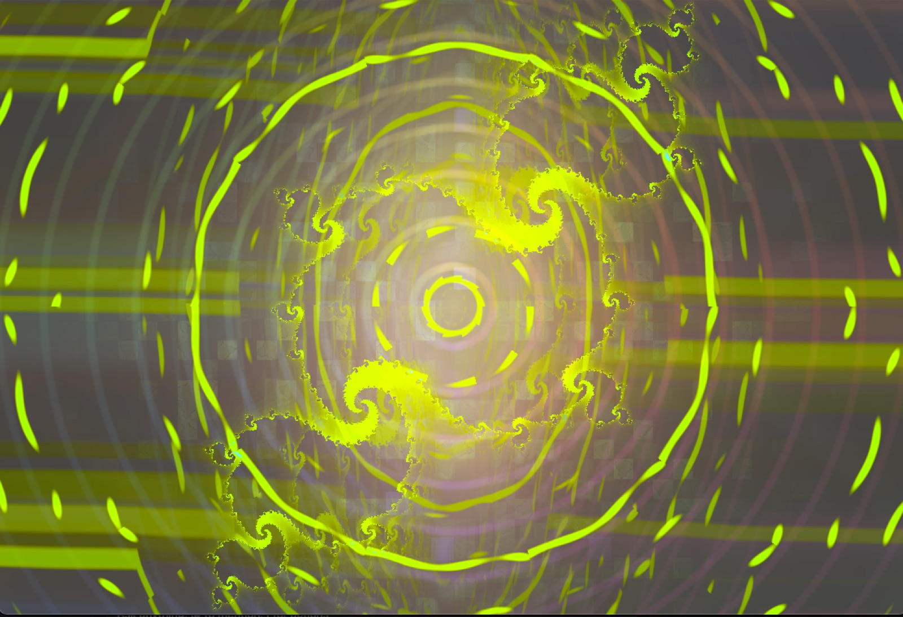
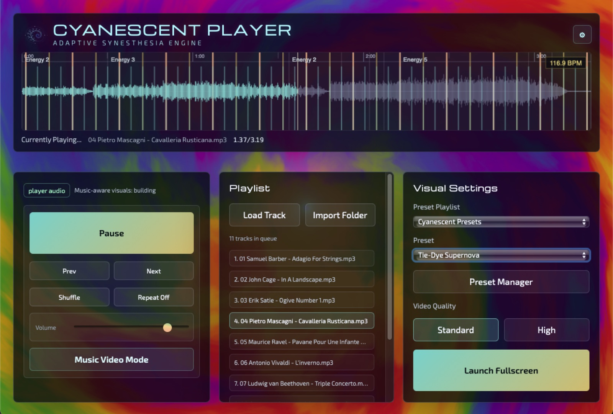
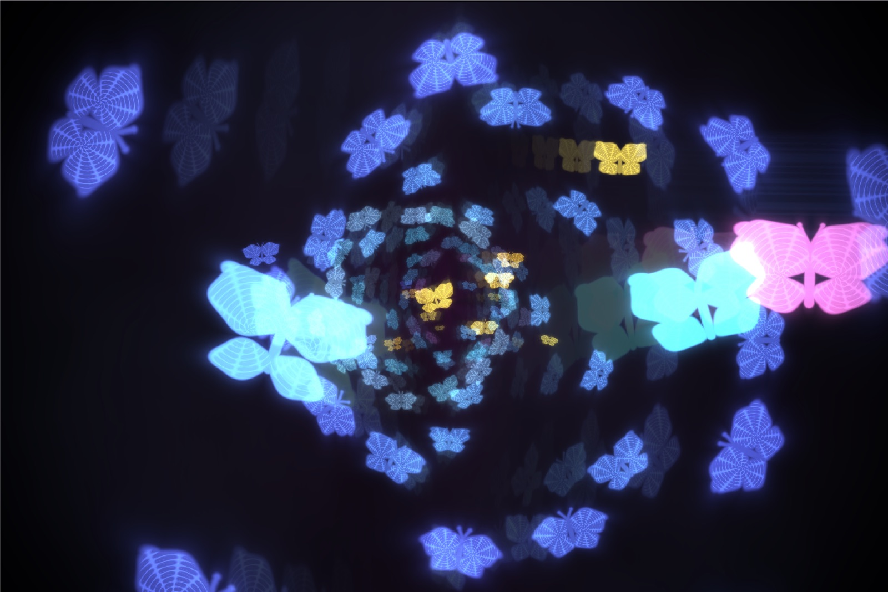
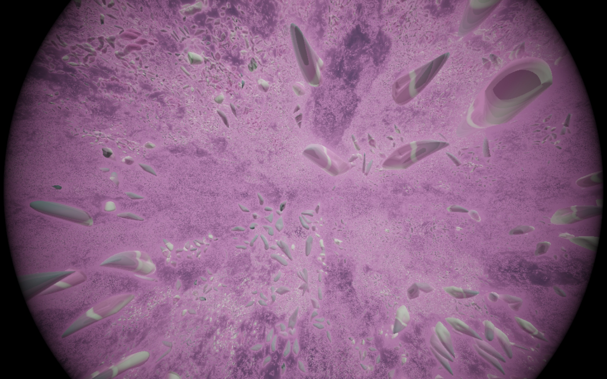
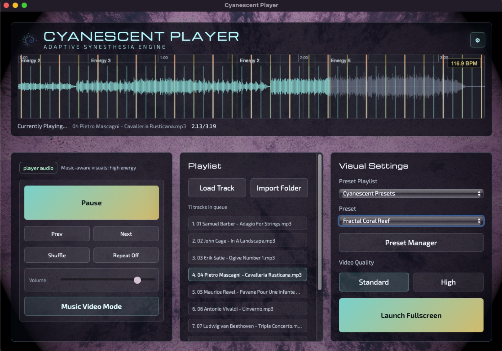
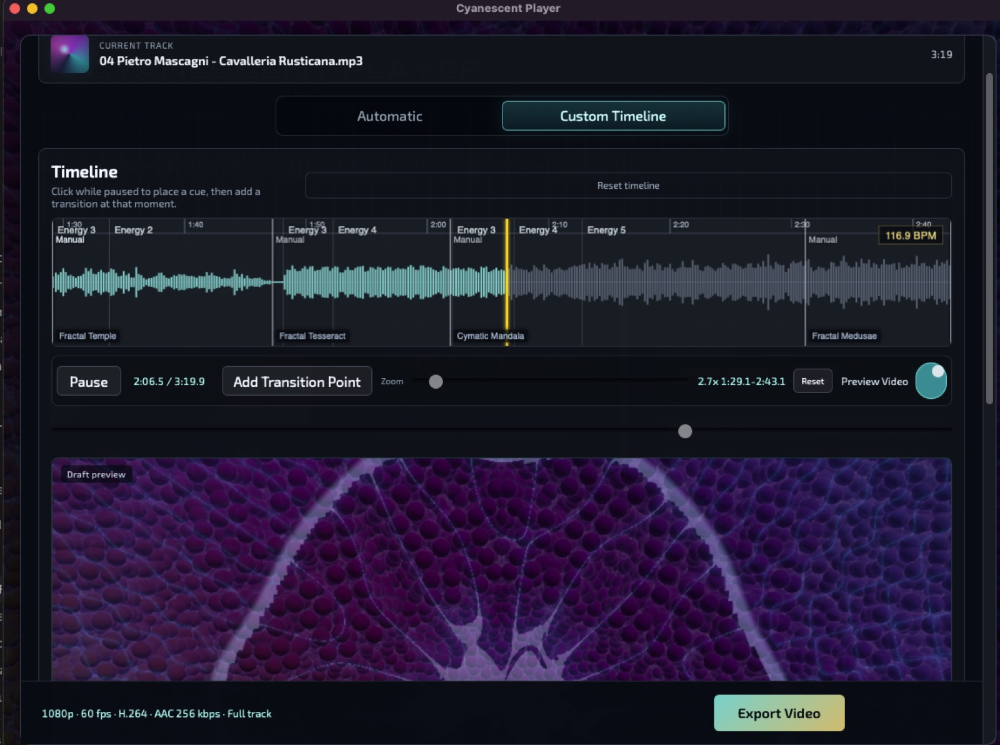

Cyanescent Player
A music player and audio-reactive visualiser for immersive generative worlds, adaptive preset journeys, and high-quality video creation.
0.9 Preview · macOSVisual Worlds
Every track opens a different world
GPU-driven visual presets that breathe with the music — organic, fractal, spectral, and strange.





Capabilities
What the 0.9 Preview includes
Generative Visual Engine
Load a track. The visuals respond — not as a waveform overlay, but as a living world shaped by rhythm, energy, and harmonic structure.
- Audio-reactive generative visual presets driven by GPU shaders
- Adaptive visual journeys that evolve with the music
- Smooth crossfade transitions between presets
- Preset playlists and shuffle modes for continuous exploration
- Music playback with real-time waveform and energy analysis
- A curated selection of Cyanescent visual presets

Performance & Preset Management
Import, organise, perform live or make music videos with the presets. Switch rendering modes to match your system and intent.
Video Export
Turn a track into a music video. Build a custom transition timeline, preview it in real time, then export at up to 1080p with 60 fps and H.264 encoding.
- Export music videos at resolutions up to 1920×1080
- Custom transition timeline — place cue points, assign presets, choose transitions
- Automatic and manual transition modes
- Low-resolution draft preview with audio before committing to export
- Video transitions with curated transition clips
- No Watermarks

Film
See it in motion
Public Preview
Version 0.9 is a preview release
Cyanescent Player is under active development. The 0.9 Preview is a working release for early exploration — not a finished product.
Things to know:
- The software is still being refined — expect occasional rough edges
- Feedback and bug reports are genuinely welcome
- Some features may have preview-build limitations
- The app is signed and notarised by Apple for a straightforward first launch
Get Started
Download Cyanescent Player
Load your music. Enter the visual world.